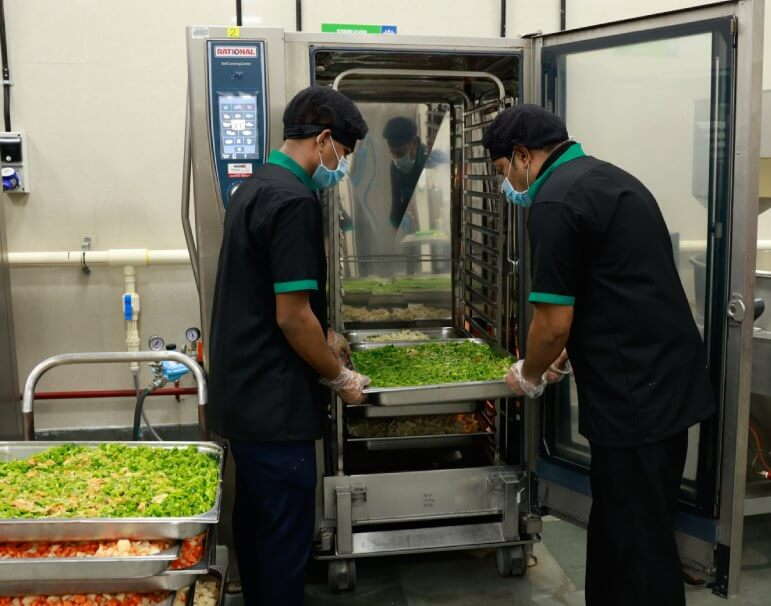

NEED FOR INTERVENTION IN MUMBAI
The biggest irony is, Mumbai, the financial capital ranks the worst on hunger index in Maharashtra and urban India.
59.7% of households in urban slums of Mumbai are ‘severely food-insecure’ (i.e., they run out of food and have to survive without eating for a day or more)
Nearly 50,000 children in Mumbai are severely malnourished and nearly 2,000 lose their life every year fighting hunger
Every 2nd child in Mumbai is wasted or stunted which means they either have a low height for their age or a low weight for their height
